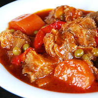

Kaldereta
Kaldereta or caldereta is a goat meat stew from the Philippines. Variations of the dish use beef, chicken or pork. Commonly the goat meat is stewed with vegetables and a liver paste. Vegetables may include tomatoes, potatoes, olives, bell peppers and hot peppers; kaldereta sometimes includes tomato sauce
Kaldereta is often served with rice, as most filipino dishes, and often include sauce to put on the rice.The meat that they are often served the most with is beef, followed bu pork. Chicken is rarely used in this dish.